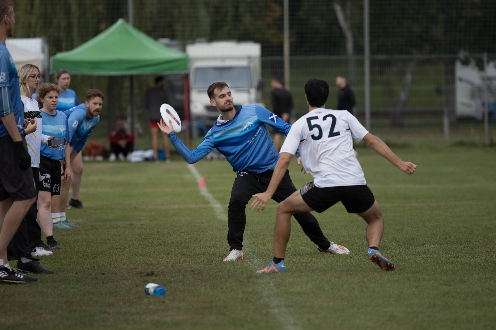
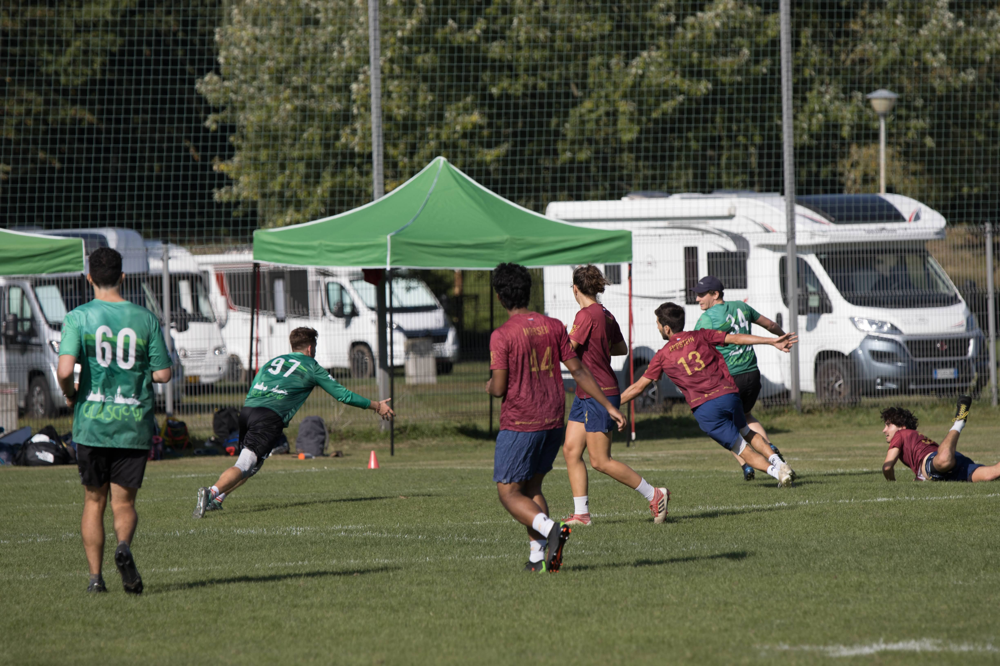
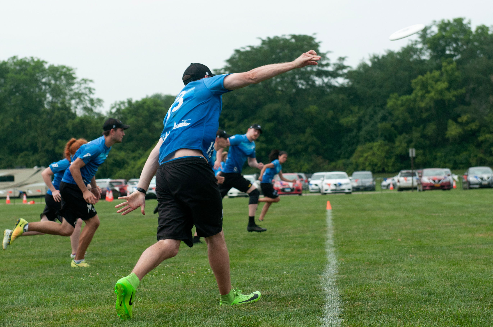

Watch and Learn
Watching good examples of ultimate games, teams and individuals can aid your development on two levels:
Subconscious learning
Visual cues are incredibly important in skill development and we often under-estimate how much of this process is largely subconscious. Most of our human behaviour is learned through copying. We don’t require instruction manuals to learn to walk, talk or play Frisbee. We can develop our own game simply by watching good ultimate and watching our favourite players throw and move.
Conscious learning
Focusing our attention on specific aspects of the game by studying players, teams and technique, can unlock new levels in our own development. Conscious assessment can raise awareness of flaws or provide new ideas for skills and tactics that we’d like to employ.

Self Improvement
Watch others
We can learn a lot from the skills already present in those around us. If there is a particular skill you would like to improve, find a teammate that does it well and spend some time with them. Throw with them, partner up in drills, take a few mental notes and ask them questions. Observe their technique, try to mimic their movements while being aware of your own.
If you don’t have any real life role models, use the internet. There are hundreds of filmed games and coaching channels available (see below). Find a player that inspires you and watch them play the game. Find a skill that you want to develop, watch a coaching video and note down a couple of points to focus on at your next practice session.
Watch yourself
Watching yourself on film can be uncomfortable. Sometimes there is initial disbelief: Do I really run like that? Is that really how I throw? This is completely normal; our self-perceptions often differ from reality. However, getting to know your on-screen self will allow you to help that player develop. We also tend to be overly critical of ourselves, again a natural reaction. We are more likely to perceive our own differences as flaws and we notice our own mistakes more than anyone else.
Getting to know yourself on-screen will help you better understand the player you are and the player your team perceives you to be. Video footage can help you to track your own progress and development. It can reveal weaknesses in our form, play or decision-making which you might not notice otherwise, allowing you to tailor your training to address these.
There’s also valuable perspective to be gained by watching matches again from a different vantage point and with distanced emotions. Research shows that on average, athletes and coaches only recall ~30% of performance correctly. Watching games back gives us a more rounded view of our performance and also a more objective standpoint.
Perspective and feedback from coaches is invaluable. However, keeping track of a whole team means their attention cannot be focused on one individual throughout a training session or match. Remember, you are your best coach. Use footage to review your own performance in depth. If you speak to your coach about specific aspects of your game they may be willing to review footage to give more detailed and personalised feedback.
Improve your technique
Film your drills, sprints, lifts and throwing. You don’t need to film every session, just every now and then to check in on your form, or if there is a particular skill component that you are trying to address. There are slow motion apps which allow you to break down your technique frame-by-frame for in-depth analysis.
Use footage to adjust your next rep.
Ask a coach to have a look at the footage and get feedback.
Compare your technique with other athletes.
Focus on changes in your technique and how this affects the outcome.
Improve your performance in games
There is a lot to be gained from watching your own games and analysing your performance. Again, you are likely to be the only person who will do this with a sole focus on you.
Analyse your turnovers and near-turnovers
Were the errors due to execution, decision making, concentration or luck?
Are there any recurring patterns? e.g. not pivoting fully, always trying to catch with the same hand etc.
Do they occur in specific scenarios? e.g. when stuck on a sideline, when there’s pressure on the catch etc.
Are your teammates doing things you don’t expect?
Are you doing things your teammates don’t expect?
Don’t be overly critical
- It’s easy to focus on the mistakes at the end of a possession but try to remember all the good stuff that went before.
Find your highlight reel
- It’s important to pick out the good stuff too.
Don’t forget the boring stuff
Are you good at making space for teammates.
Do you set up in good positions.
Are you timing your continuation cuts well.
How is your defensive positioning and communication.
Visualise alternatives
Pick a few scenarios and think about what you could do differently
Cut laterally to clear a clogged lane and look for a break throw.
Call a switch with a teammate to prevent an easy pull play score.
Reflect and act
You should come away from watching a game with a few general thoughts and an actionable plan to improve your game
Reflection
Has the game solidified your belief in your strengths and weaknesses?
What do you do well for your team? What could you do better?
Use video analysis to build a picture of who you are as a player.
Action points
- Pick 1 or 2 things from your performance to specifically improve.
Watching Ultimate Games
So much can be learned by watching others play the game, especially those that do it well. Watching other teams play live or on-screen can improve your game knowledge, make you aware of new strategies and provide inspiration for yourself and your team.

Video analysis is now commonplace in competitive sports and a lot can be gained by viewing games with an analytical mindset.
Tips for watching games analytically
Take in the full picture. Think about tactics, choices and teamwork.
Watch the players off the disc
How do they create space for themselves and teammates?
When do they time their cut?
How do they shake or surprise defenders?
What are defenders doing against inactive cutters?
Watch entire possessions to see how play develops
What were the key passes/cuts that opened up space to attack?
Which decisions led to the opportunity to get a block? Find a smart block then rewind to watch the build up.
Think about tactics
Try to spot set plays, different structures, the types of zones being used etc. This will help you become more aware in games.
What is the forcing strategy? How are other defenders setting up?
Find role models
Watch players that play similar roles to you.
- Analyse how they play those positions, the way they move and the decisions they make.
Watch recorded matches
You’ll get more out of your time if you can skip through all of the dead time in a match.
Rewind function is crucial for analysing plays.
Use the keyboard shortcuts “,” and “.” to go frame-by-frame for close calls and studying technique. The arrow keys can skip 10s at a time.
Highlight reels
Highlight reels are great for inspiration, motivation and showcasing our sport. However, the best highlight plays tend to be the product of throwing or decision errors that allow a defender to bid or require a receiver to make a play. Good offence is often quite boring but there is so much to be learned from teams that keep the disc well, create space on the field and run good plays.
Tips for analysing your own team
Analysing your team’s performance can help you to improve your own game. You may find better ways to integrate with the team’s style or identify weaknesses where you could better support your team.
Providing critical analysis for teammates can be a touchy subject. Think about your role on the team (are you a captain or coach), how the process may affect teammates and what the best channels are to deliver feedback.
Ideally you want to pick up on a few specific things that your team could improve as a whole. It’s best to focus on errors that commonly occur rather than highlighting every specific error each individual makes.
Even better, find examples of other teams executing a technique, tactic or play perfectly to illustrate to your team.
If you can, watch games together. Start productive communication and get your teammates perspectives on certain scenarios. Getting all of your players to buy into strategy and playing style creates a solid team identity.
Tips for scouting other teams
It’s useful to build a short profile on opposition teams or players that you will match up against. The information you record should be concise, easy to digest just before a match and focus on things you can actually use to your advantage.
Identify their preferred offensive structure
- Is this the same for O and D lines?
Identify set plays and the initial “tells” that would allow you to recognise these in a game.
Identify their defensive strategies and zone setups
Where are the spaces to attack?
How do we “beat” this strategy?
Identify key players and match ups
Which players usually pick up the disc or are the main throwing threats?
Which players are the preferred first cutters or deep options?
Which defenders get poach blocks?
- Is it better to keep them away from the disc or out of the deep spaces?
Which players can we exploit with a mismatch?
Identify the players you are going to mark
What are their preferred moves?
Where do they release most of their throws?
Where do they look uncomfortable on the pitch?
What are their defensive strengths and weaknesses?
Recording statistics
Data analysis has huge potential and is starting to revolutionise the way other sports are played. Statistics can be extremely valuable to teams and individuals if the correct information and crucially, ENOUGH information, is recorded. We won’t delve into it here, but it’s critical to realise that statistics can be wildly misleading without enough data points and the correct application.

Video Resources
Good outdoor games to start with:
World Ultimate Championships 2024 Mixed Quarterfinal Japan vs Australia: https://www.youtube.com/live/gHTrGhsDZIg?si=tzCiWv_4cJQHAWkw
WUC 2024 Mixed Final Canada vs. USA: https://youtu.be/ntM7yf9Eggk?si=u9fpA7Y7N-UJnaGb&t=970
WUC 2024 Women’s Power Pool Colombia vs. USA: https://www.youtube.com/live/iSCr5cSO0hw?si=X1SsfhiAQ5y4lDbI
2018 WU24UC - Japan vs USA Mixed Gold Medal Match Day 7 - Reupload
Good indoor games:
Indoor Euros 2024 Mixed Final Mighty Hucks vs. Tartu Turbulence: https://www.youtube.com/live/tWryffH2nAU?si=ZG5kOmbVET_T42Rh
Indoor Euros 2024 Women’s Final Athletico vs. KFUM Orebro: https://www.youtube.com/live/U6fgsqhFlfs?si=lQSL9d2kA4DpiR6a
Find more:
Ultiworld YouTube: https://www.youtube.com/@ultiworld
- Games from WUC, then mostly US Club Ultimate games and some Canadian content
Ulti.TV YouTube: https://www.youtube.com/@ULTIdotTV
- Mostly European and Australian Ultimate, including some indoors from European Championships and some beach Ultimate.
WFDF YouTube: https://www.youtube.com/@WorldFlyingDiscFederation
- More US Ultimate, some WJUC (juniors) games and beach games, including Asia Oceanic.
Coaching and analysis channels:
Hive Ultimate: https://www.youtube.com/@HiveUltimate
Ultiworld: https://ultiworld.com/category/analysis/
Rise Up - footage of good movement tied in with drills to apply them to your own game: https://www.youtube.com/@riseupultimate
Excel Ultimate - game analysis and throwing/movement form, some on structure: https://www.youtube.com/@RowanMcDonnell
AUC - more bitesized videos on throwing and movement: https://www.instagram.com/advancedultimatecoaching/
Eric Dee - performance coaching: https://www.instagram.com/itsericdee/